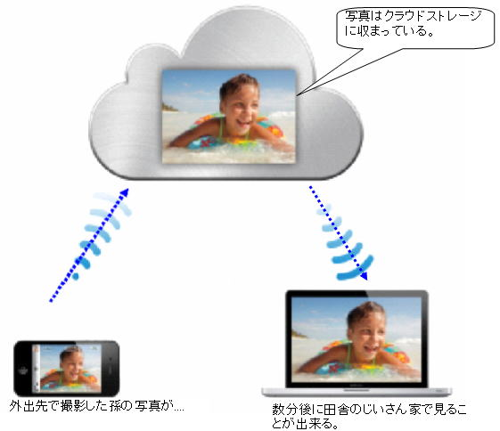
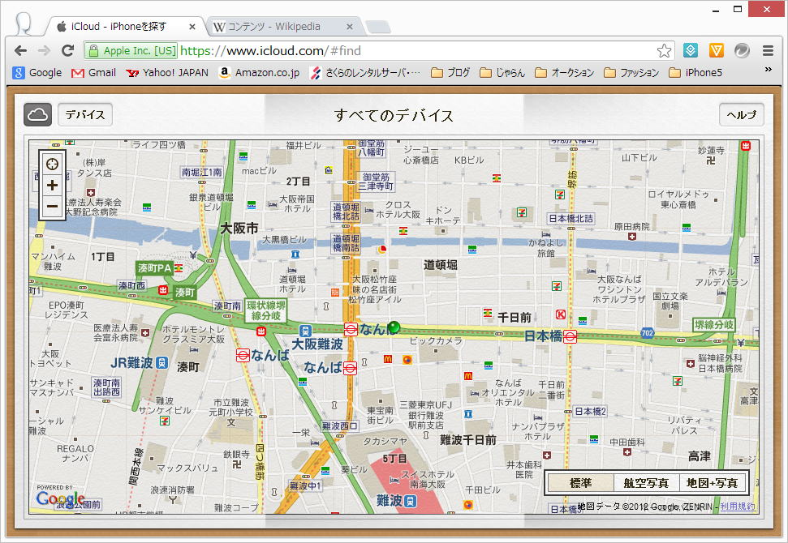
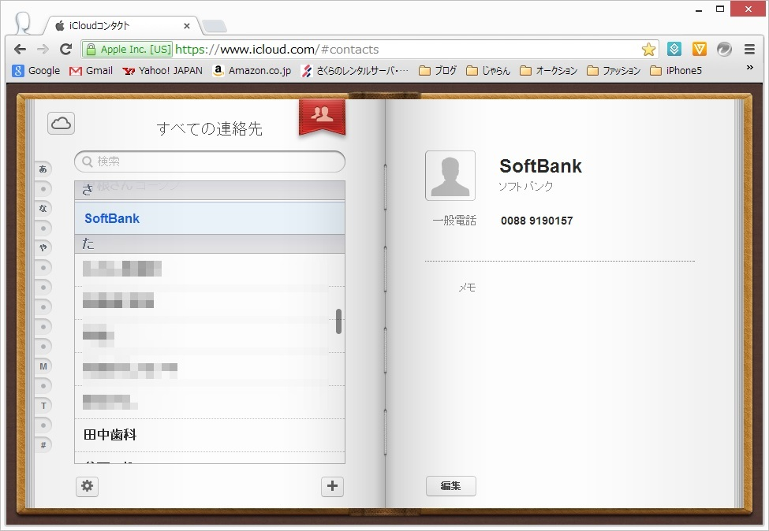
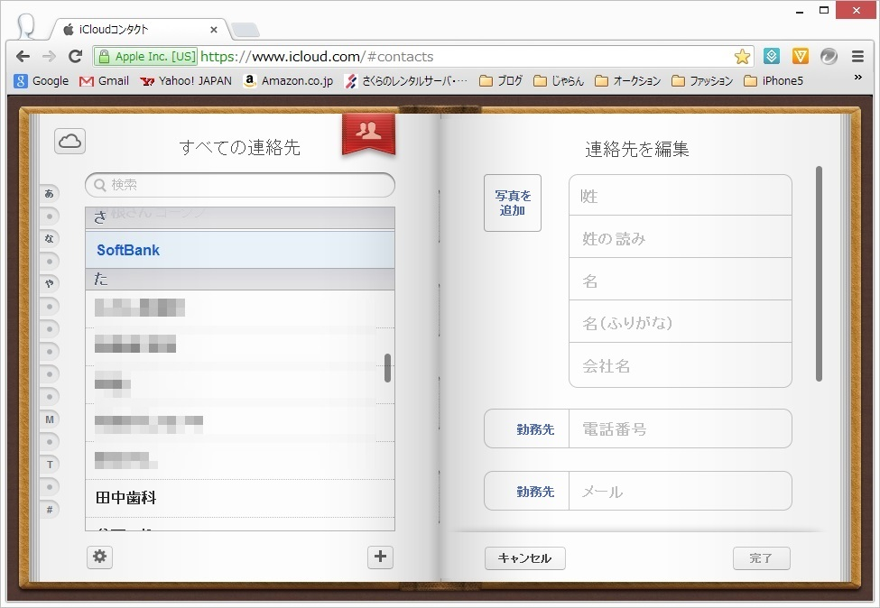
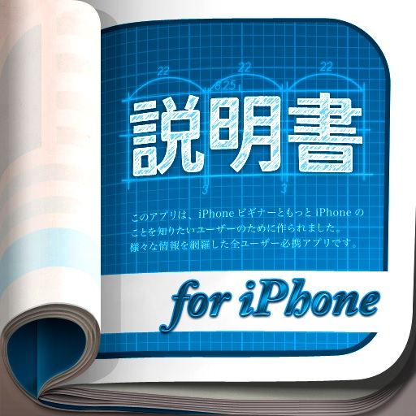
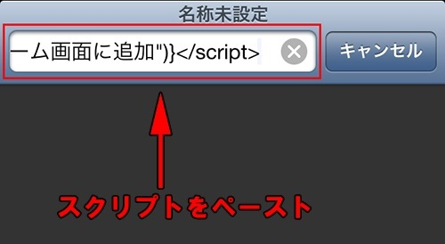
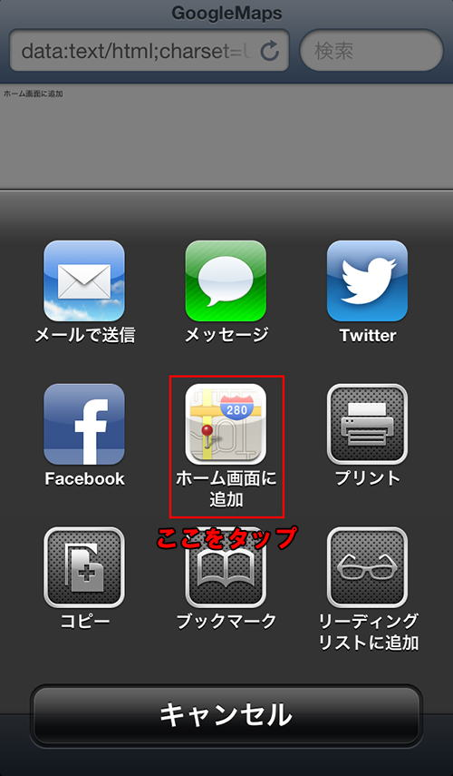

| TOP | weblog | TIPS | Works | リンク | 戻る |
| iPhone5 TIPS(1) (1)「i.softbank.jp」ドメインのメールアドレス変更 (2)「i.softbank.jp」ドメイン・メールサーバーの情報 (3)「電話帳簡単コピー」アプリは簡単ではありません、問題ありです。 (3)iCloudってどーよ？ (4)iCloudのプライバシー (5)iCloudの「コンタクト」を使ってiPhone5電話帳の「グループ」機能を代用する？(調べ中です) (6)プッシュ機能とアプリの振る舞い (7)Googleマップとストリートビューを「アプリ」的に使う (1) 「i.softbank.jp」ドメインのメールアドレスの変更はiPhone5本体からしかできません。 「My Softbank」からはできません。 それと３Gでしか出来ませんのでWi-FiはOFFにします。(Wi-Fiだとシステムエラーになります) -戻る- (2) 「i.softbank.jp」ドメイン・メールサーバーの情報です。 「iCloud」が気に入らない人はお気に入りにのメーラーに設定して使ってください。 注意：以下の情報はソフトバンクが公式に発表したものではありませんので自己責任で利用してください。 IMAPサーバ：imap.softbank.jp SMTPサーバ：smtp.softbank.jp IMAPポート：143（標準どおり） SMTPポート：587（Submissionポート）, non-ssl SMTP認証：あり -戻る- (3) 「icloud」とは何か？、手っ取り早く知るにはAppleのウェブサイトでビデオを見ましょう。 簡単に言うと下図のような事が手間いらずで出来るようになるわけです。 クラウドストレージ、「iPhone5とパソコンとで共有するためのファイルを入れる仮想のディスクスペース」があって、iPhone5とパソコンの両方で共有と同調（同期をとる）事ができます。 クラウドストレージはAppleが５GBまで無償で提供しています。(それ以上は有償らしい)  上図では写真はiPhone5→パソコンの方向ですが、逆もありです。 基本的にはiPhone5とパソコンで同期をとります。 電話帳もicloudで共有できるのですが、iPhone5で追加した電話帳はパソコンでも見れるし、パソコンで追加した電話帳はiPhone5にも追加されます、でも、させないこともできます。 なんで「クラウド(雲)」？ クラウドストレージを実現するためのコンピュータシステムは見えない(意識する必要がない)「雲の中は見れない」から来てるんじゃないですかね？
メール、リマインダー、メモ、Passbookは最初は「オン」にしていたけど後からオフにしたのであります。 「オン」にしてバックアップした内容は消えずに残っています。 手で消さないとだめだろうな？ 写真は通常「C:\Users\ログインユーザー\Pictures\Photo Stream」に入ります。 これまではメールで飛ばすとか、SDカードで渡していたので、これは大変便利です。 下図は「iPhone５を探す」で表示された地図です、ちゃんと合ってますよ。  コンタクト（電話帳の事） iPhone5の電話帳がすべてアップロードされてました。  パソコンで追加した電話帳はiPhone5にも勝手に追加されるはずです。  (4) 子供には専用のパソコンを与えているけど、夫婦で１台ずつパソコン持っている人そんなに多くないはず。 でもiCloudつかうとお互いにメールの内容とか見れちゃうわけです。 そりゃ、パスワードをお互い秘密にしておけば互いに見ることはできないだろうけど、大抵はダンナがパソコンのお世話をするのでパスワードを聞かないとメンテ出来ない。 ですからiCloudは「電話帳」のバックアップと写真のバックアップ＆パソコンへのダウンロードとして使う程度でしょうかねぇ？ (5) iOS6の電話帳には「グループ」機能はありません、これは確かなようです。 iCloudと連携すると出来るみたいで、方法は「iPhoneの説明書」アプリに書かれているようです。 実験してから結果を報告します。  iPhoneの説明書 -戻る- (6) プッシュ機能とアプリの振る舞い プッシュ通知とはアップルが設置した専用サーバー（Apple Push Notification Service、以下APNS）へ信号を送ることで、iPhoneなど対応デバイスへほぼリアルタイムに何らかのデータを送信できる機能を言います。 対象のiOSアプリが起動していないときやiOSデバイスがスリープ状態のときでもアプリを起動することが出来ます。 その通知方法は3種類あり、どれに対応するかはアプリにより異なる。 「テキスト」−画面にダイアログが現われ文字で情報を知らせるもの。 「バッジ」−アプリアイコンの右上に赤丸を表示し数字や記号で知らせるもの。 「サウンド」−通知を受けた瞬間に音を出すもの。 これらはアプリを初めて起動したときに許可することで有効となり、以降は「設定」の「通知」から各項目をオン／オフできます。 アップルは開発者に対しアプリの審査という形でプッシュ通知の利用範囲を制限しています。(2012年8月24日時点） 広告は配信できず、課金にも利用出来ません。 個人情報や重要情報は扱えないうえ、起動後最初にユーザーの同意を得る必要があります。 Androidとは異なり制約が多く、結果としてユーザーには“スパム・プッシュ通知”が届かない仕組です。 とはいえ、ニーズの高さからして今後は緩和方針に転じないとも限りません。 Androidの状況は決して対岸の火事ではないのであります。 ＊利用中のNEXUS7では、今のところウザったいことにはなってませんが、ウェブのgmailには広告がバンバン入ります。 (7)Googleマップとストリートビューを「アプリ」的に使う アップル製地図は相当クオリティの低い様で、あるはずの道がなかったり、駅の場所が違っていたり施設名が異なっていたり、謎の地名が表記されていたりと。どうにかして『Googleマップ』を使いたいと言う人は『Safari』なりのブラウザを起動して「Googleマップ」と検索すればブラウザベースで『Googleマップ』も利用するしかないのかなと思って調べてみたらあ。ありました。 邪魔なブラウジングメニューを消してマップ、ストリートビューをフルスクリーンで利用できる方法です。 Googleマップを「アプリ」的に使う方法 次のスクリプトをクリップボードにコピー（iOSでもクリップボード？）
  ストリートビューのスクリプト。 上記の「Googleマップ」と同じ要領で出来ます。
|